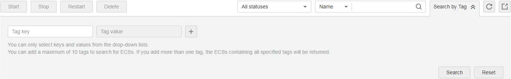

After tags are added to resources, you can search for resources by tag using either of the following methods.
Searching for ECSs by Tag
On the Elastic Cloud Server page, search for ECSs by tag key or value.
- Log in to the management console.
- Click
 in the upper left corner and select your region and project.
in the upper left corner and select your region and project. - Under Computing, click Elastic Cloud Server.
- Click Search by Tag above the upper right corner of the ECS list to expand the search area.Figure 1 Searching for ECSs by tag
 - Enter the tag of the ECS to be searched for.
Neither the tag key nor value can be empty. When the tag key or value is matched, the system automatically shows the target ECSs.
- Add tags.
The system supports multiple tags and uses the intersection set of all tags to search for ECSs.
- Click Search.
The system searches for ECSs based on tag keys and values.
Filtering Resources on the TMS Console
- Log in to the management console.
- Under Management & Deployment, click Tag Management Service.
- On the Resource Tags page, set the search criteria, including Region, Resource Type, and Resource Tag.
- Click Search.
All the resources that meet the search criteria will be displayed in the Search Result area.